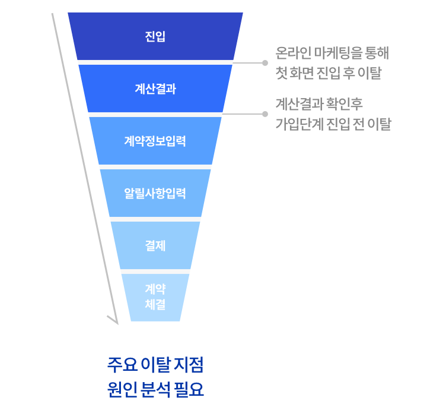
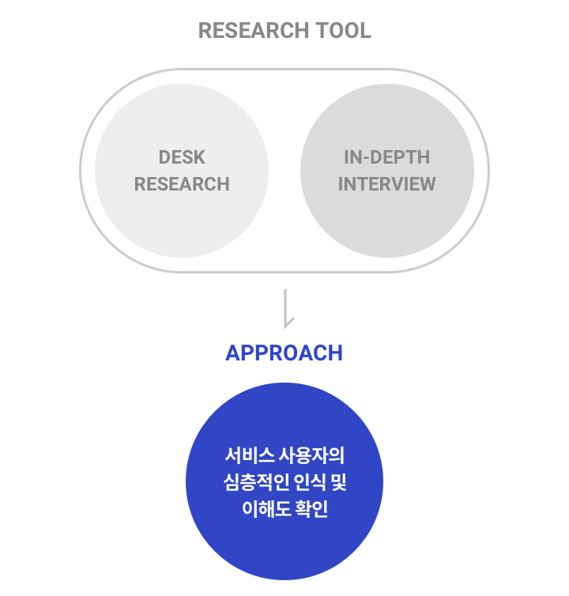
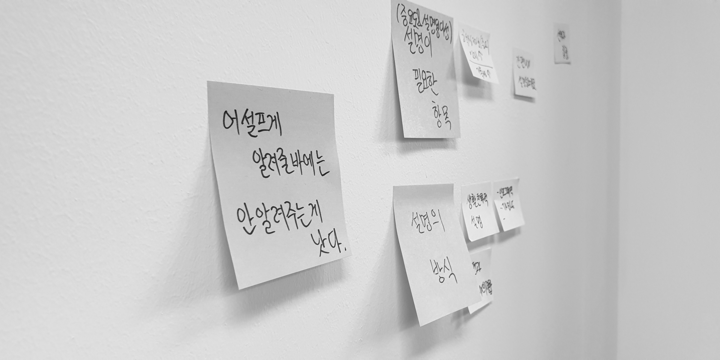
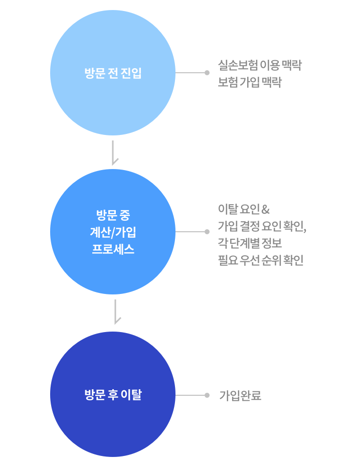
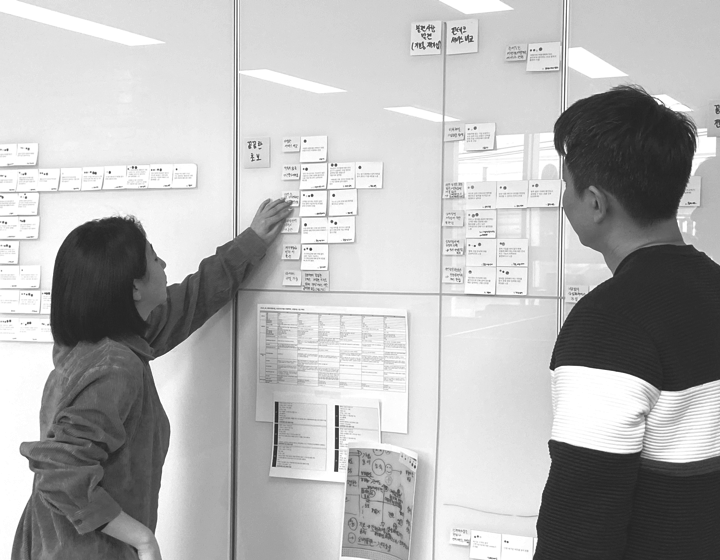
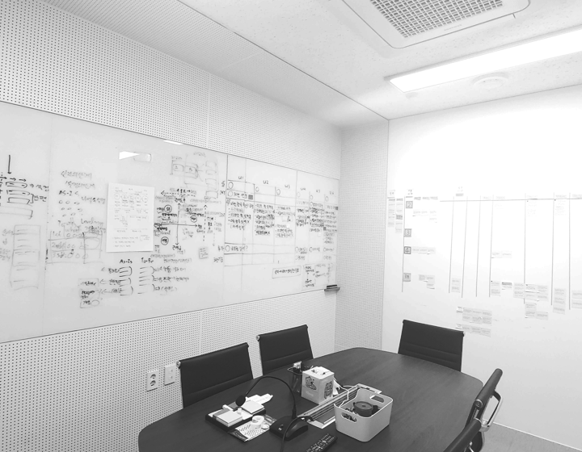
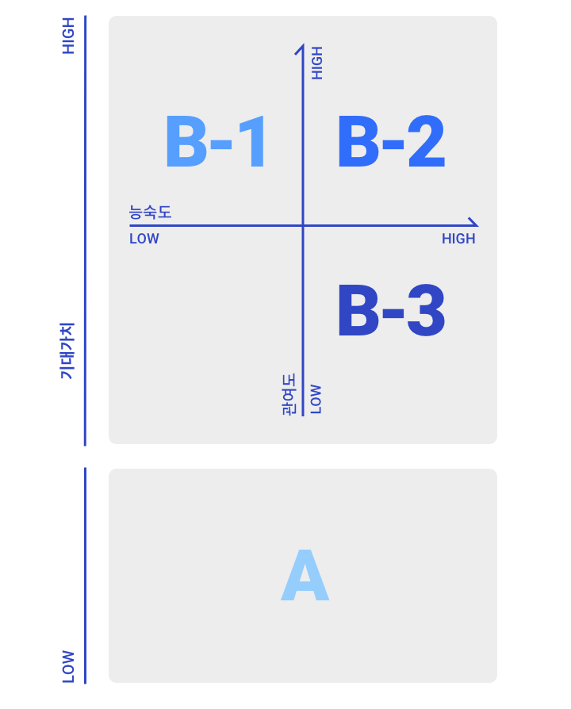
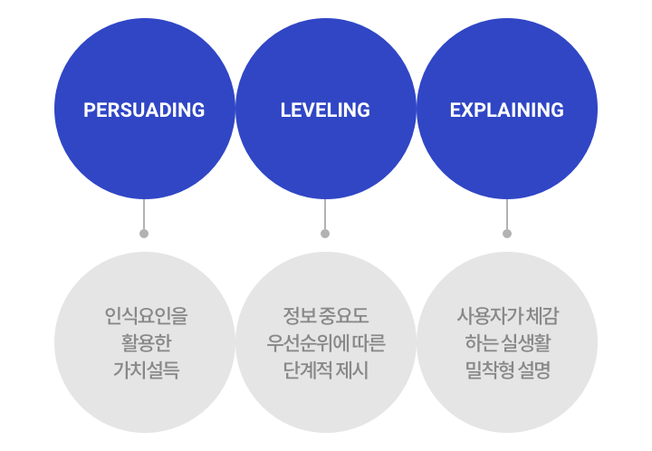

삼성화재 다이렉트실손의료비 보험
-
CLIENT
삼성화재 다이렉트
-
DATE
2020. 02 ~ 2020. 03
-
WORK
UX Stratege, UX Research
-
TEAM
UX designs
- OVERVIEW
-
삼성화재 다이렉트 실손보험의 주요 고민은 모바일 프로세스 상의 높은 이탈율이었습니다. 실손보험 상품 특성 상 자동차 보험 상품과 달리 의무 보험이 아니기 때문에 온라인 마케팅을 통해 서비스에 진입한 경우, 각 단계의 고객 전환율이 떨어지며 특히 보험료 계산 결과 이후 가입 전환의 어려움이 있음을 파악했습니다.
 -
NETIVE RED는 문제 원인을 파악하기 위해 서비스 내부의 UI적 불편사항을 확인하는 것보다 상품에 대한 고객의 심층적인 인식 및 이해도를 확인하는 방식의 접근이 필요하다고 판단했습니다.
 -
이를 위한 조사툴로 Desk Research 및 In-depth Interview을 활용하여 핵심 이슈에 대한 인사이트를 뽑아 고객의 이탈율은 낮추고 가입 전환율을 높일 수 있는 UX 전략을 제시하는 것을 이번 사용자 조사의 프로젝트 목표로 삼았습니다.

- APPROACH
-
먼저 이해관계자 인터뷰 진행 및 구체적인 검증 이슈를 통해 가입 전환률이 낮은 원인이 상품의 낮은 이해도와 선택 보험 속성이 고려되지 않은 UX에 있을 것이라는 가설을 세웠습니다. 또한 이를 확인하기 위해 모바일 프로세스 상의 주요 단계의 이탈 요인과 상품 속성에 맞는 가입 결정 요인을 확인을 하는 방식으로 Approach를 수립하였습니다.

- RESEARCH
-
UX의 큰 방향성을 제시하는 리서치 프로젝트로써 현 고객들이 느끼고 있는 서비스 경험에 대한 정확한 이해 및 파악이 관건이었기 때문에 무엇보다 조사 프레임 설계부터 리쿠르팅 대상 선정, 인뎁스 인터뷰 등 각 정성적인 조사 단계를 더욱 치밀하게 세워 고객의 생생한 니즈를 찾는데 집중하였습니다.

-
이를 위해 먼저 보험 시장 동향 및 사용자의 주요 실손보험 가입 행태를 파악하기 위한 경쟁사 벤치마킹과 데스크리서치를 진행하였으며 Try It Yourself(유저 시나리오)를 통해 사용자의 구체적인 Pain Point 및 Needs를 예측하였습니다.
-
그리고 사용자 그룹 별 행동 패턴을 명확하게 분류하기 위해 현 삼성화재 서비스 이용 고객을 대상으로 DB필터링과 설문 필터링을 1,2차적으로 거른 다음, 보험 경험도와 연령대를 기준으로 인터뷰 대상자를 선정하였습니다.
 -
해당 인터뷰를 바탕으로 가입 결정 전까지 거쳐야 하는 사전 단계가 존재하며 현 다이렉트의 실손보험은 가입 필요성을 느끼는 고객만을 대상으로 한 서비스임을 확인했습니다. 고객 인터뷰 내용을 토대로 실손보험을 접근-탐색-가입하는 과정 상의 행동 특성에 따라 사용자 유형을 재분류하여 유형 별 니즈, 이탈요인, 가입 결정 요인을 분석하였습니다.

- STRATEGE
-
그 결과로, 저희는 실손보험 상품의 이탈을 줄이고 가입 전환을 늘리기 위해 필요한 3개의 키워드로 UX전략을 도출했습니다.
 -
- Persuading
-
가입 필요성을 느끼게 하는 인식요인을 활용하여 화면 상의 설득 컨텐츠를 생성하고 고객 정보를 입력하는 경로에 배치하여 흥미를 유발시키고자 하였습니다.
- Leveling
-
컨텐츠 중요도에 따라 단계적인 정보를 제시하여 고객 요구 수준에 맞는 정보만을 인지하여 가입까지 잘 이어지도록 유도하는 것이 필요함을 강조했습니다.
- Explaining
-
그래픽을 활용한 예시, 쉬운 용어와 생활 밀접한 표현으로 콘텐츠를 구성하여 제공해야함을 제시했습니다.
-
삼성화재 다이렉트 프로젝트는 무형의 상품을 다루는 보험 서비스의 특성에 맞춰 사용자를 어떻게 설득시킬 것 인가에 대한 챌린지가 있었던 netivered의 의미 있는 과제였습니다. 고객사가 앞으로 나아가야할 UX 방향을 명확한 키워드로 제시하여 동일한 보험 가입 프로세스가 아닌 상품 특성을 고려한 맞춤 UX를 제공하고자 하였습니다.
- Project Manager
- Na JiHoon
- UX Consultant
- Kim Sangmi, Ohk Jooeun, Kim YaeYoung